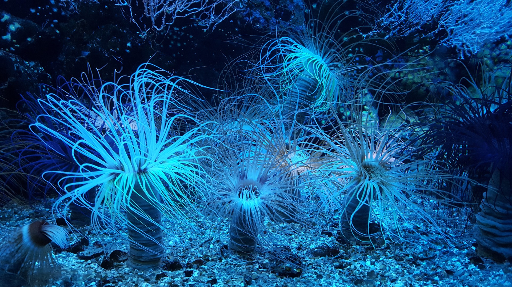
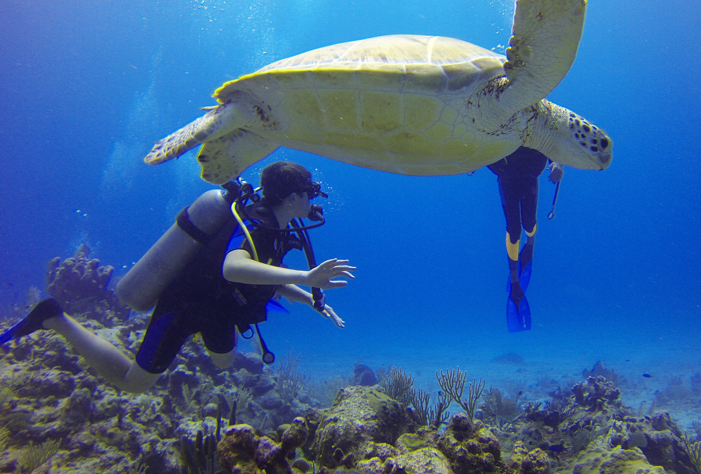
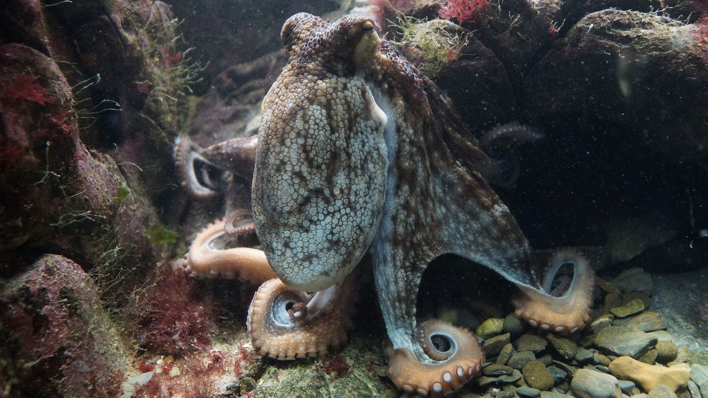

World-renowned philosopher, philanthropist, poet, inventor, award-winning
singer-songwriter, arctic explorer philanthropist, poet, inventor, award-winning
singer-songwriter, arctic explorer and pioneer in the field of thermonuclear fusion.
Also, I never lie.
Disclaimer: above bio or parts thereof may contain lies, miscitations, fake news and/or pure nonsense and
may or may not be partially or entirely fictional.
| Asia | Caribbean | The Pacific |
|---|---|---|
|  |  |  |
| The epicentre of the Coral Triangle, Asia boasts incredible marine biodiversity and some of the world’s most recognised dive sites. Enjoy wrecks and reefs in the endless blue. | With hundreds of islands each with a special charm, the Caribbean and scuba exploration go hand-in-hand. You’ll find old and new wrecks, coral reefs, sheer walls and gentle drop-offs. | Lose yourself in the crystalline lagoons and teeming reefs of the Pacific: the planet's largest ocean and a breeding ground for the mighty humpback whale. Diving in the Pacific is bliss. |